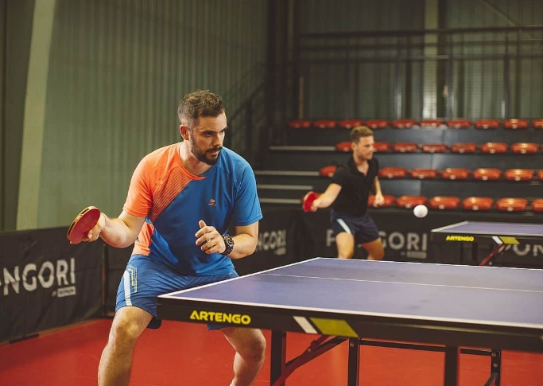

W tenisie sto³owym wyró¿nia siê kilka podstawowych stylów gry, z których ka¿dy opiera siê na innym podejœciu do rotacji, dynamiki i taktyki.
Styl ofensywny (agresywny topspinowy) – gracz stara siê dominowaæ wymianê, u¿ywaj¹c mocnych topspinów z forehandu i backhandu. Charakterystyczne s¹ szybkie ataki, rotacje do przodu i ci¹g³a presja na przeciwniku. Ten styl wymaga dobrej pracy nóg i szybkich reakcji.
Styl defensywny (chop) – polega na g³êbokim ciêciu pi³ki z du¿ym backspinem. Chopper gra zazwyczaj dalej od sto³u, zmuszaj¹c przeciwnika do pope³niania b³êdów. Dysponuje œwietn¹ kontrol¹ i potrafi zmieniaæ d³ugoœæ oraz rotacjê pi³ki, utrudniaj¹c atak.
Styl allround (wszechstronny) – opiera siê na równowadze miêdzy atakiem a obron¹. Gracz stosuje zarówno topspiny, jak i ciêcia, potrafi zmieniaæ tempo oraz rotacjê. Jest to styl elastyczny, odpowiedni dla graczy, którzy lubi¹ taktyczne podejœcie i dostosowywanie siê do rywala.
Styl spinowy – skoncentrowany na generowaniu ró¿norodnych rotacji: topspin, backspin, sidespin. Gracz wykorzystuje zmiany rotacji, aby kontrolowaæ wymianê, zaskakiwaæ przeciwnika i przygotowaæ sobie mo¿liwoœæ ataku.
Ka¿dy z tych stylów wymaga innej techniki, pracy nóg i doboru strategii, a najlepsi zawodnicy potrafi¹ ³¹czyæ elementy kilku stylów, aby zyskaæ przewagê w grze.